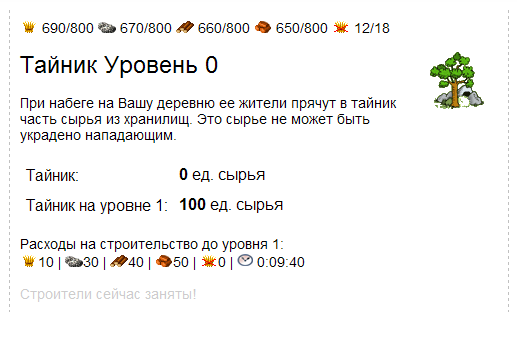
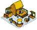
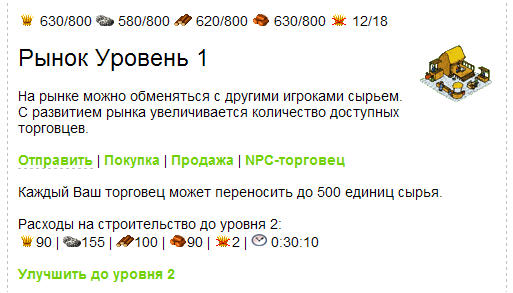
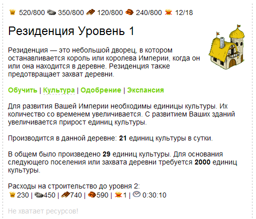
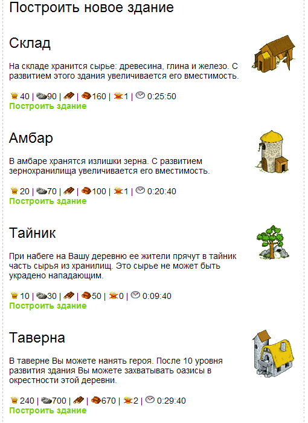

| |
Поселок ч.3. Другие постройки
7.1.
Тайник
Приветствуем Вас, уважаемый коллега по
игродельческому мастерству и сегодня мы продолжим рассмотрение
строительства зданий в поселке игрока и на первом месте у нас идет
тайник. Тайник - нужен в игре для того, чтоб прятать от набегов
враждебных войск излишки ресурсов. Картинку для отображения тайника
в поселке будем использовать эту:
Для начала мы должны добавить тип этой постройки в нашу справочную
таблицу
building_types.
insert into building_types (bt_id,bt_name,bt_image,bt_image_not_ready,bt_description,bt_ycoord_dif,bt_template)
values (11,'Тайник','img/vill/g23.gif','img/vill/g23b.gif','При набеге на Вашу деревню ее жители прячут в тайник часть сырья.',22,'tpl_g23');
Фрагмент 7.1.1Затем мы добавляем несколько уровней апгрейдов
тайника в таблицу
build_levels_cost.
/*тайник*/
insert into `build_levels_cost`(bt_id, blc_level, blc_wood, blc_clay, blc_ore, blc_grain, blc_cons, blc_space, blc_time_upgrade)
values (11,0,0,0,0,0,0,0,'0:00:00');
insert into `build_levels_cost`(bt_id, blc_level, blc_wood, blc_clay, blc_ore, blc_grain, blc_cons, blc_space, blc_time_upgrade)
values (11,1,40,50,30,10,0,100,'0:09:40');
insert into `build_levels_cost`(bt_id, blc_level, blc_wood, blc_clay, blc_ore, blc_grain, blc_cons, blc_space, blc_time_upgrade)
values (11,2,50,65,40,15,0,130,'0:15:10');
insert into `build_levels_cost`(bt_id, blc_level, blc_wood, blc_clay, blc_ore, blc_grain, blc_cons, blc_space, blc_time_upgrade)
values (11,3,65,80,50,15,0,170,'0:21:20');
insert into `build_levels_cost`(bt_id, blc_level, blc_wood, blc_clay, blc_ore, blc_grain, blc_cons, blc_space, blc_time_upgrade)
values (11,4,85,105,65,20,0,220,'0:28:40');
insert into `build_levels_cost`(bt_id, blc_level, blc_wood, blc_clay, blc_ore, blc_grain, blc_cons, blc_space, blc_time_upgrade)
values (11,5,105,135,80,25,0,280,'0:37:10');
Фрагмент 7.1.2
Как Вы видите, для тайника тоже характерно поле blc_space, как для
склада и амбара и значение в этом поле показывает, сколько может
быть спрятано ресурсов в этом тайнике. Чем выше уровень тайника, тем
больше ресурсов может быть спрятано в случае набега врага.Вы помните, что для "входа" в какое-то здание из карты поселка
у нас применяется скрипт build.php, а к нему
подключаются шаблоны, характерные для каждого здания. И у тайника
тоже есть свой простенький шаблон. Как Вы видели из справочника building_types
для тайника название шаблона -
tpl_g23.php .
Вот его содержимое:
// Тайник
echo '<table cellpadding="5" cellspacing="1" id="build_value"><tr>
<td >Тайник:</td>
<td ><b>'.get_res_space( $b_level, 11 ).'</b> ед. сырья</td>
</tr>
<tr>
<td >Тайник на уровне '.($b_level+1).':</td>
<td ><b>'.get_res_space( $b_level + 1, 11 ).'</b> ед. сырья</td>
</tr>
</table>';
Фрагмент 7.1.3.Тут все просто, рисуем
табличку и вписываем вместимость тайника на текущем и следующем
уровне, используя функцию get_res_space,
которую ранее применяли для амбара и склада.
После добавления в наш скрипт travgame.sql
фрагментов 7.1.1 и 7.1.2 и пересоздания базы можно построить тайник,
щелкнув на любую стройплощадку и выбрав из списка доступных построек
созданным нами тип тайника. После этого при "входе" в еще строящееся
здание мы увидим следующую картину:

Рисунок 7.1.1
7.2.
Рынок
Какая современная браузерная игра обходится
без торговых операций. Более подробно сами торговые операции мы
рассмотрим в следующем Занятии, полностью посвященному торговле и
торговцам в нашей игре. А сегодня мы мы создадим саму постройку -
рынок и сделаем заготовки - шаблоны под все виды торговых операций.
И если все ранее рассмотренные шаблоны для зданий состояли из одного
файла, то для рынка у нас будет сразу четыре шаблона! А пока что -
вот как выглядит картинка рынка:

ПО сложившейся традиции мы должны добавить тип этой постройки в нашу
справочную таблицу
building_types.
insert into building_types (bt_id,bt_name,bt_image,bt_image_not_ready,bt_description,bt_ycoord_dif,bt_template)
values (12,'Рынок','img/vill/g17.gif','img/vill/g17b.gif','На рынке можно обменяться с другими игроками сырьем.',22,'tpl_g17'); Фрагмент
7.2.1И после этого мы добавляем несколько уровней апгрейдов
рынка в таблицу
build_levels_cost.
/*рынок*/
insert into `build_levels_cost`(bt_id, blc_level, blc_wood, blc_clay, blc_ore, blc_grain, blc_cons, blc_time_upgrade)
values (12,0,0,0,0,0,0,'0:00:00');
insert into `build_levels_cost`(bt_id, blc_level, blc_wood, blc_clay, blc_ore, blc_grain, blc_cons, blc_time_upgrade)
values (12,1,80,70,120,70,4,'0:23:40');
insert into `build_levels_cost`(bt_id, blc_level, blc_wood, blc_clay, blc_ore, blc_grain, blc_cons, blc_time_upgrade)
values (12,2,100,90,155,90,2,'0:30:10');
insert into `build_levels_cost`(bt_id, blc_level, blc_wood, blc_clay, blc_ore, blc_grain, blc_cons, blc_time_upgrade)
values (12,3,130,115,195,115,2,'0:39:20');
insert into `build_levels_cost`(bt_id, blc_level, blc_wood, blc_clay, blc_ore, blc_grain, blc_cons, blc_time_upgrade)
values (12,4,170,145,250,145,2,'0:49:40');
insert into `build_levels_cost`(bt_id, blc_level, blc_wood, blc_clay, blc_ore, blc_grain, blc_cons, blc_time_upgrade)
values (12,5,215,190,320,190,2,'1:01:40');
Фрагмент 7.2.2После внесения в наш скрипт
travgame.sql фрагментов 7.2.1 и 7.2.2 и пересоздания базы
можно приступить к постройке рынка, щелкнув на любую стройплощадку и
выбрав из списка доступных построек созданным нами тип рынка.
Какие же торговые операции будут осуществляться на нашем рынке?
1. Отправка ресурсов - в этой
операции мы будем просто указывать сколько ресурсов и какого типа
отправить в какой поселок.
2. Покупка ресурсов - в этой
операции мы будем выбирать из таблицы рыночных предложений, то
предложение об обмене один тип ресурса на
другой, который нас в данный момент устраивает.
3. Продажа ресурсов - здесь мы
сами задаем, какой тип ресурса на какой мы хотели бы обменять на
рынке.
4. NPC торговец
- это просто скрипт, который поможет распределить ресурсы и
подсчитать остатки от распределения.
Как мы уже упоминали, у нас с Вами будет 4 шаблона для этих
операций. Первый и основной будет носить имя, как указано в
справочной таблице
building_types и это имя - tpl_g17.php.
Обратите также внимание, что мы теперь в справочной таблице
стали писать название шаблона без .php. А
это расширение добавляется уже при вызове из build.php.
Это связано с необходимостью манипуляции несколькими
страницами шаблонов для одного здания.
Итак, для начала, шаблон tpl_g17.php:
// Рынок
echo "<div id='textmenu'>
<a href='build.php?bnum=$bnum' class='selected'>Отправить</a>
| <a href='build.php?bnum=$bnum&p=2'>Покупка</a>
| <a href='build.php?bnum=$bnum&p=3'>Продажа</a>
| <a href='build.php?bnum=$bnum&p=4'>NPC-торговец</a>
</div>";
echo '<br>Каждый Ваш торговец может переносить до 500 единиц сырья.<br>';
Фрагмент 7.2.3Вы видите, что мы
создаем что-то типа меню и текущий элемент меню выделен (определен
как class='selected' , посмотрите файле стилей
start.css что из себя представляет
определение a.selected)
подчеркиванием. По сути каждый
элемент это ссылка, вызывающая один и тот
же файл build.php и передающая в
него номер здания и номер страницы (p=2,3
или 4). Если номер страницы не передается, значит это главная
страница шаблона (т.е. tpl_g17.php)
В файле build.php обрабатывается номер страницы
следующим образом:
// есть подменю в здании?
if( $_GET['p'] <> '' ){
$page = "_".$_GET['p'];
}
Фрагмент 7.2.4
И подключение шаблона теперь осуществляется так:
@include("tpl/".$bt_template.$page.'.php');
Фрагмент 7.2.5
Из фрагментов 7.2.4 и 7.2.5 видно, что если, например передан
номер страницы 2, то build.php попытается подключить
шаблон tpl/tpl_g17_2.php,
если передан номер страницы 3, то - tpl/tpl_g17_3.php
и т.д.
Значит нам нужно создать все эти шаблоны (tpl_g17.php, tpl_g17_2.php, tpl_g17_3.php, tpl_g17_4.php).
Пока что в них будет находится одна и та же информация как во
фрагменте 7.2.3. Единственное - в каждом шаблоне нужно выделить
подчеркиванием свой (текущий) пункт меню. Откройте эти
шаблоны, которые находятся здесь и посмотрите
как это сделано. А выглядит это так:

Рисунок 7.2.1
7.3.
Резиденция, Таверна
Оба этих здания нужны в основном для экспансии - то есть захвата
других земель. Резиденция нужна для основания нового поселения, а
Таверна для тренировки героя и захвата оазисов (захват оазисов и
создание героя мы рассмотрим в 10 занятии).
Сперва рассмотрим Резиденцию и картинка для нее у нас будет
следующей:
Резиденция, как и рынок будет у нас иметь шаблон, состоящий из
нескольких файлов,
1. Пункт меню: Обучить - файл tpl_g25.php
(после 10 уровня резиденции, можно проводить основание
новых поселений)
2. Пункт меню: Культура - файл tpl_g25_2.php
(В поселке накапливаются единицы культуры, которые нужны
для экспансии)
3. Пункт меню: Одобрение - файл tpl_g25_3.php
(на этой странице показывается лояльность населения к
захватам чужих земель)
4. Пункт меню: Экспансия - файл tpl_g25_4.php
(здесь можно увидеть захваченные нашим поселком земли)
Более подробно мы рассмотрим только накопление единиц культуры, а
сейчас поглядим как выглядят наши шаблоны для Резиденции. Первый
шаблон с именем tpl_g25.php
выглядит так:
// Резиденция
echo "<div id='textmenu'>
<a href='build.php?bnum=$bnum' class='selected '>Обучить</a>
| <a href='build.php?bnum=$bnum&p=2'>Культура</a>
| <a href='build.php?bnum=$bnum&p=3'>Одобрение</a>
| <a href='build.php?bnum=$bnum&p=4'>Экспансия</a>
</div>";
if ($b_level < 10 ) {
echo '<br>Для основания следующего поселения или захвата деревни требуется резиденция с уровнем 10.<br>';
}
Фрагмент 7.3.1
Здесь особых комментариев делать не нужно. И мы сразу перейдем ко
второму шаблону tpl_g25_2.php:
// Резиденция
echo "<div id='textmenu'>
<a href='build.php?bnum=$bnum'>Обучить</a>
| <a href='build.php?bnum=$bnum&p=2' class='selected '>Культура</a>
| <a href='build.php?bnum=$bnum&p=3'>Одобрение</a>
| <a href='build.php?bnum=$bnum&p=4'>Экспансия</a>
</div>";
echo '<br> Для развития Вашей Империи необходимы единицы культуры. Их количество со временем увеличивается.
С развитием Ваших зданий увеличивается прирост единиц культуры.<br>';
echo '<br>Производится в данной деревне: <b>'.get_culture_points( $fid ).'</b> единиц культуры в сутки. <br>';
echo '<br>В общем было произведено <b>'.get_user_cp_all( $_SESSION['usr_id'] ).'</b> единиц культуры. Для основания следующего поселения или
захвата деревни требуется <b>2000</b> единиц культуры.<br>';
update_culture_points( $fid );
Фрагмент 7.3.2Как видите, здесь уже немного интереснее.
Используются какие-то незнакомые функции! Например
get_culture_points с которой мы и
начнем. Единицы культуры в поселке зависят от количества зданий и их
уровня. Придумаем какую-нибудь формулу. К примеру такую:
CulturePoints = (building_level*2+building_level)*qty,
где
CulturePoints - количество единиц культуры в сутки
building_level - уровень здания
qty - количество зданий
Исходя из этих соображений функция
get_culture_points будет выглядеть так:
/////// посчитаем кол-во единиц культуры от всех зданий //////////////
function get_culture_points( $fid ){
$culture = 0;
$res = mysql_query("SELECT b_level from buildings where fid=$fid" )
or die("Query failed : " . mysql_error());
while ($row = mysql_fetch_array( $res )) {
$culture += $row["b_level"] * 2 + $row["b_level"];
}
return ( $culture );
Фрагмент 7.3.3Вы видите, что мы перебрали все здания в нашем
поселке и применили выше придуманную формулу для подсчета единиц
культуры и вернули подсчитанное значение оператором
return.
Теперь пришла очередь функции
get_user_cp_all. Она выводит количество единиц культуры уже
накопленных в нашем поселке. Как жаль, что мы не позаботились о
хранении этой величины и нам предстоит это сделать сейчас. Для этого
в таблице users мы сделаем еще одно
одно поле culture_points в котором и будем хранить единицы
культуры. В принципе можно было хранить и в таблице
fields, но это уже на Ваше усмотрение,
можно хранить это значение для всех поселков в таблице
users или для каждого поселка
игрока (если их будет больше, чем 1) отдельно в таблице
fields. А пока что, вот эта процедура:
// сколько всего единиц культуры уже накоплено?
function get_user_cp_all( $user_id ){
$res = mysql_query("SELECT culture_points from users where usr_id=$user_id" )
or die("Query failed : " . mysql_error());
$row = mysql_fetch_array( $res );
return ( $row["culture_points"] );
}
Фрагмент 7.3.4Кроме поля culture_points нам понадобится
еще поле, где будет хранится время последнего апдейта информации о
единицах культуры - time_up.
Вот эти поля мы добавляем в скрипт таблицы users:
time_up bigint DEFAULT 0, /*время обновления страниц игры (доб.7 урок)*/
culture_points bigint DEFAULT 0, /*единицы культуры (доб. 7 урок)*/
Фрагмент 7.3.5
И теперь осталось сделать функцию, которая будет отслеживать,
сколько же единиц культуры у нас накопилось. Назовем ее
update_culture_points. Вот как она
выглядит:
// расчитываем и обновляем единицы культуры //
function update_culture_points( $fid ){
$cpsec = get_culture_points( $fid )/86400;
$timedif = time() - get_user_time_up( $_SESSION['usr_id'] );
$gencp = $cpsec*$timedif;
if( $gencp > 1 ) {
$gencp = ceil($gencp);
$res = mysql_query("update users set culture_points = culture_points + $gencp, time_up = ".time()." where usr_id=".$_SESSION['usr_id'] )
or die("Query failed : " . mysql_error());
}
}
Фрагмент 7.3.6Эта функция использует еще одну маленькую функцию
get_user_time_up, которая возвращает
время последнего апдейта из поля time_up таблицы
users.
// время последнего обновления страниц игры
function get_user_time_up( $user_id ){
$res = mysql_query("SELECT time_up from users where usr_id=$user_id" )
or die("Query failed : " . mysql_error());
$row = mysql_fetch_array( $res );
return ( $row["time_up"] );
}
Фрагмент 7.3.7Возвращаясь к фрагменту
7.3.6, мы видим, что сперва мы находим число генерации единиц
культуры в секунду (86400 - это число секунд в сутках, т.е.
60*60*24). Далее мы находим, сколько времени уже прошло с того
момента как мы последний раз интересовались единицами культуры.
Затем перемножим кол-во единиц культуры в секунду на количество
секунд, прошедших со времени последнего апдейта этой информации и
если результат больше единицы, то значит накопилось еще немного
единиц культуры и мы можем выполнить запрос на обновление этого
количества в таблице users , а заодно и пропишем время
текущего апдейта. Как Вы поняли, мы не делаем апдейт времени, пока
не накопится хотя бы одна единица культуры!
Вот как выглядит страница, создаваемая фрагментом 7.3.2:

Рисунок 7.3.1
Чтоб посмотреть как производятся единицы культуры в реальном
времени (потому что при 21 единицы культуры в сутки, мы будем ждать
очень долго), исправьте значение, возвращаемое функцией
get_culture_points, например так:
return ( $culture + 1500 );
Фрагмент 7.3.8И тогда дело пойдет значительно быстрее!
Страницу tpl_g25_2.php,
мы сделаем просто:
// Резиденция
echo "<div id='textmenu'>
<a href='build.php?bnum=$bnum'>Обучить</a>
| <a href='build.php?bnum=$bnum&p=2'>Культура</a>
| <a href='build.php?bnum=$bnum&p=3' class='selected'>Одобрение</a>
| <a href='build.php?bnum=$bnum&p=4'>Экспансия</a>
</div>";
echo '<br>Нападение на деревню совместно с сенаторами, вождями или предводителями может уменьшить лояльность населения.
Если уровень лояльности достиг нуля, население деревни решает примкнуть к Империи нападающего. Уровень одобрения в этой деревне составляет
<b>100%</b>.<br>';
Фрагмент 7.3.9Она у нас пока что будет описательного характера и
особого интереса не представляет. Тоже можно сказать и про страницу tpl_g25_3.php.
Все эти шаблоны Вы можете увидеть здесь.
На этом занятии мы также сделаем заготовку для 10 урока и соорудим
Таверну, хотя все функции ее будем уже создавать на 10 занятии. Для
начала определимся с типом здания в справочнике
building_types и уровнями его апгрейдов в build_levels_cost.
insert into building_types (bt_id,bt_name,bt_image,bt_image_not_ready,bt_description,bt_ycoord_dif,bt_template)
values (14,'Таверна','img/vill/g37.gif','img/vill/g37b.gif','В таверне Вы можете нанять героя. После 10 уровня....',32,'tpl_g37');
/*таверна*/
insert into `build_levels_cost`(bt_id, blc_level, blc_wood, blc_clay, blc_ore, blc_grain, blc_cons, blc_time_upgrade)
values (14,0,0,0,0,0,0,'0:00:00');
insert into `build_levels_cost`(bt_id, blc_level, blc_wood, blc_clay, blc_ore, blc_grain, blc_cons, blc_time_upgrade)
values (14,1,700,670,700,240,2,'0:29:40');
insert into `build_levels_cost`(bt_id, blc_level, blc_wood, blc_clay, blc_ore, blc_grain, blc_cons, blc_time_upgrade)
values (14,2,930,890,930,320,1,'0:34:10');
insert into `build_levels_cost`(bt_id, blc_level, blc_wood, blc_clay, blc_ore, blc_grain, blc_cons, blc_time_upgrade)
values (14,3,1240,1185,1240,425,1,'0:39:20');
insert into `build_levels_cost`(bt_id, blc_level, blc_wood, blc_clay, blc_ore, blc_grain, blc_cons, blc_time_upgrade)
values (14,4,1645,1575,1645,565,1,'0:46:40');
insert into `build_levels_cost`(bt_id, blc_level, blc_wood, blc_clay, blc_ore, blc_grain, blc_cons, blc_time_upgrade)
values (14,5,2190,2095,2190,750,1,'0:53:20');
Фрагмент 7.3.10Шаблон для нее пока сделаем
статичным:
// Таверна
echo '<br><table style="border-collapse: collapse;" cellpadding="0" cellspacing="0" id="army"><tr>
<td width="450" class="tabhead">Список героев</td>
<tr>
<td width="450" class="armyinfo"><font color="#CCCCCC">В настоящий момент в деревне нет воинов, которые могли бы стать героями.</font></td>
<tr>
</table>';
Фрагмент 7.3.9В 10 занятии мы сделаем в таверне тренировку героя
из какого-то типа войска и научим его как захватывать свободные
оазисы вокруг поселка.
7.4.
Таблица дерева построек
В реальной игре travian
задействован механизм очередности построек. Так, к примеру, нельзя
построить конюшню, пока нет казармы или нельзя построить рынок
пока нет амбара, склада и главное здание не достигло третьего
уровня. Давайте попробуем реализовать нечто подобное и в
разрабатываемом нами аналоге игры -
travgame.
Конечно же для этих
целей нам понадобится новая таблица для хранения информации об
очередности построек или по другому можно сказать - дереве
построек в поселке игрока. Придумаем имя
этой таблице - spr_tree (справочник дерева).
/* таблица дерева построек */
CREATE TABLE `spr_tree` (
st_id bigint(20) unsigned NOT NULL auto_increment, /*ID*/
bt_id bigint(20), /*ID из building_types, зависимая постройка*/
bt_id_parent bigint(20), /*ID из building_types, постройка (от которой зависит)*/
st_level int DEFAULT 0, /*уровень постройки*/
PRIMARY KEY (`st_id`)
) ENGINE=MyISAM DEFAULT CHARSET=cp1251;
Фрагмент 7.4.1
st_id - уникальный идентификатор записи в таблице
spr_tree
bt_id - тип постройки (связь с таблицей
building_types )
bt_id_parent - тип постройки (связь с таблицей
building_types строения (родительское строение) от которого
зависит возможность строительства
этого)
st_level - уровень строения (родительское строение) от
которого зависит возможность строительства этого
Таким образом эта структура позволяет знать, что предварительно
необходимо построить для того строения, которой мы сейчас хотим
возвести в нашем поселке. Давайте добавим
в нее несколько записей:
/*Резиденция требует главного здания уровень 3*/
insert into spr_tree(bt_id,bt_id_parent,st_level) values (13,2,3);
/*Рынок требует Главное здание уровнеь 3, Амбар уровень 1, Склад уровень 1*/
insert into spr_tree(bt_id,bt_id_parent,st_level) values (12,2,3);
insert into spr_tree(bt_id,bt_id_parent,st_level) values (12,3,1);
insert into spr_tree(bt_id,bt_id_parent,st_level) values (12,4,1);
Фрагмент 7.4.2
Добавьте создание новой таблицы spr_tree и несколько строк ее
содержимого в наш скриптовый файл создания таблицы
travgame.sql.Вы видите, что
, например для типа здания
(12) создано
сразу три строки. В первой указано главное здание (тип 2)
и его уровень - 3, во второй и третьей указаны - амбар и
склад. А Сейчас давайте сделаем механизм проверки, можно ли строить
здание на выбранной стройплощадке.
7.5.
Использование дерева
Вы прекрасно помните, что нажав на любую стройплощадку
мы увидим список зданий для постройки. Так, например, для скрипта
travgame.sql из текущего занятия мы увидим
следующий список:

Рисунок 7.5.1
Если Вы внесли изменения в travgame.sql в
соответствии с прошлым пунктом нашего занятия, то строения - рынок и
резиденция не будут нам доступны. Как же работает этот механизм?
Давайте вспомнит шаблон стройплощадки, который находится в файле
tpl_iso.php. Он немного поменялся и
тепрь выглядит так:
// Стройплощадка!
$res = mysql_query("SELECT bt.bt_id,bt.bt_name,bt.bt_image,bt_description,
blc_grain, blc_ore, blc_wood, blc_clay, blc_cons, blc_time_upgrade
FROM building_types bt
inner join build_levels_cost blc on blc.bt_id = bt.bt_id
WHERE blc_level = 1 and bt.bt_id <> 10 and bt.bt_id not in (select bt_id from
buildings b WHERE b.fid = $fid) and bt.bt_id <> 1", $link )
or die("Query failed : " . mysql_error());
while ($row = mysql_fetch_array( $res )) {
$btype = $row["bt_id"]; // какой тип здания?
$bt_name = $row["bt_name"];
$bt_image = $row["bt_image"];
$bt_description = $row["bt_description"];
$a_grain = $row["blc_grain"];
$a_ore = $row["blc_ore"];
$a_wood = $row["blc_gwood"];
$a_clay = $row["blc_clay"];
$a_cons = $row["blc_cons"];
$a_time_up = $row["blc_time_upgrade"];
if ( allow_tree_build( $fid, $btype) ){ // проверим дерево построек?
echo '<br><img src="../'.$bt_image.'" align="right">';
echo "<span class='res_header'>".$bt_name." </span><br><br>";
echo $bt_description."<br><br>";
echo '<img src="img/res/grain.png">'.$a_grain.' | <img src="img/res/ore.png">'.$a_ore.' | <img src="img/res/wood.png">'.$a_wood.' |
<img src="img/res/clay.png">'.$a_clay.' | <img src="img/res/cons.png">'.$a_cons.' | <img src="img/res/time.png"> '.$a_time_up.'<br>';
if( !build_upgrade_in_progress( $fid ) )
echo '<a class="build" href="village.php?bnum='.$bnum.'&bt='.$btype.'">Построить здание </a><br><br>';
else echo '<font color="#CCCCCC">Строители заняты</font>';
}
}
Фрагмент 7.5.1Вы видите, что в строке 24 появилась проверка при
помощи функции allow_tree_build, в
качестве аргументов которой передается идентификатор поселка и тип
строения, который мы собираемся возводить. Как же выглядит эта
функция? А вот как:
//// разрешено ли строить здания исходя из дерева построек? ///////
function allow_tree_build( $fid, $btype ){
$res = mysql_query("SELECT st_level,bt_id_parent from spr_tree where bt_id=$btype" )
or die("Query failed : " . mysql_error());
while ($row = mysql_fetch_array( $res )) {
$bt_id_parent = $row["bt_id_parent"];
$st_level = $row["st_level"];
if( !is_building_level_exists( $fid,$bt_id_parent,$st_level ) )
return ( false );
}
return ( true );
}
Фрагмент 7.5.2В ней мы делаем выборку по
указанному типу зданию из таблицы spr_tree , то есть ищем - а есть
ли в ней записи о строениях, которые нужно построить сперва до того
как построится заказанное здание игроком. Если такие постройки есть,
то считываем их тип и уровень и передаем в функцию
is_building_level_exists, которая
выглядит так:
/////// есть ли в поселки такое здания и такого уровня? ////////
function is_building_level_exists( $fid, $btype, $st_level ){
$res = mysql_query("SELECT bid from buildings where fid=$fid and bt_id=$btype and b_level=$st_level" )
or die("Query failed : " . mysql_error());
return ( mysql_num_rows( $res ) > 0 );
}
Фрагмент 7.5.3Эта функция возвращает
true или false в
зависимости от того, построено ли в поселки игрока нужное здание
требуемого уровня.
Вот и все! Теперь игроку придется позаботится о постройке
необходимых зданий и апгрейдов существующих перед тем, как,
например, возводить рынок. Вы можете добавить еще какие-нибудь
зависимости в таблицу spr_tree. А на сегодня мы закончили текущее
занятие.
В следующем уроке мы с Вами займемся
операциями торговли ресурсами, узнаем как продавать и покупать
ресурсы у других игроков, а также распределять имеющиеся при помощи
NPC-торговца.
|
 |


 Перечень курсов
Перечень курсов


 Регистрация
Регистрация